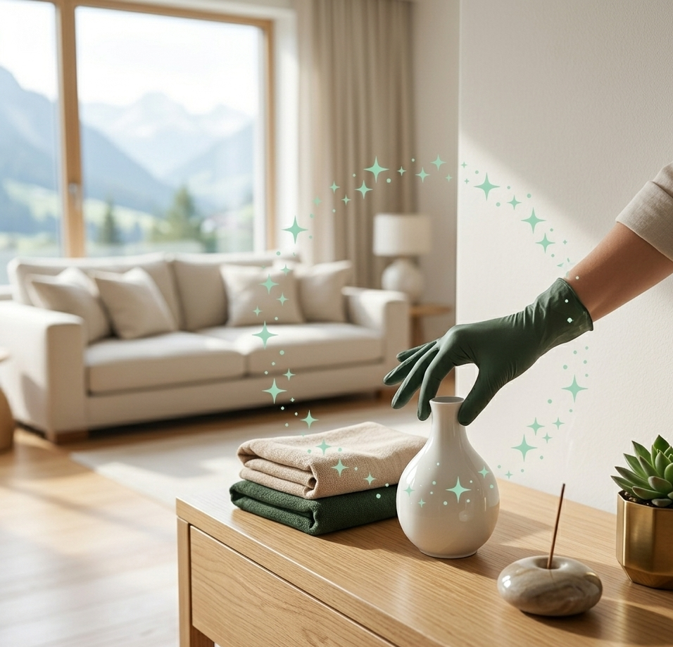

Zürich
Stadt Zürich, Winterthur und weitere Gemeinden im Kanton.
Apexora Clean bietet zuverlässige Reinigung für Privathaushalte und kleinere Geschäftsräume in Zürich, Thurgau, Schaffhausen und St. Gallen – sorgfältig, flexibel und auf Ihre Bedürfnisse abgestimmt.
Wir behandeln jeden Raum mit grösster Sorgfalt.
Klare Kommunikation und verlässliche Absprachen.
Saubere Arbeit mit einem Blick fürs Detail.
Bewusster Umgang mit Räumen, Materialien und Ressourcen.
Wir bieten professionelle Reinigungsleistungen für private und kleinere geschäftliche Räume – zuverlässig, effizient und individuell abgestimmt.
Alle Leistungen und Preise ansehen →Regelmässige oder einmalige Reinigung von Wohnungen und Häusern.
Mehr erfahren →Zuverlässige Reinigung für Büros und kleinere Geschäftsräume.
Mehr erfahren →Gründliche Reinigung für stärker beanspruchte oder länger nicht gereinigte Räume.
Mehr erfahren →Reinigung sicher erreichbarer Fenster, Rahmen und Fensterbänke.
Mehr erfahren →Endreinigungen, Baureinigungen, Umzüge und Räumungen prüfen wir individuell und bieten sie nach Besichtigung und separater Offerte an.
Unser Sitz ist in Frauenfeld. Von dort aus reinigen wir in Zürich, Thurgau, Schaffhausen und St. Gallen – für Privat- und Geschäftskunden.
Stadt Zürich, Winterthur und weitere Gemeinden im Kanton.
Frauenfeld, Weinfelden, Kreuzlingen, Arbon, Amriswil und Umgebung.
Stadt Schaffhausen, Neuhausen am Rheinfall und Umgebung.
Stadt St. Gallen, Wil, Gossau, Rapperswil-Jona und Umgebung.
Ihr Ort steht nicht in der Liste? Fragen Sie uns einfach an – wir prüfen gerne, ob wir Ihren Auftrag übernehmen können. Eine mögliche Anfahrt teilen wir Ihnen vorab transparent in der Offerte mit.

Apexora Clean ist ein Reinigungsservice für Privathaushalte und kleinere Geschäftsräume mit Sitz in Frauenfeld. Wir sind in den Kantonen Zürich, Thurgau, Schaffhausen und St. Gallen im Einsatz und stehen für sorgfältige Arbeit, klare Kommunikation und verlässliche Termine.
Jede Reinigung wird passend zum Objekt, zum gewünschten Umfang und zu Ihrem Zeitplan abgestimmt. Vor Beginn klären wir die Leistungen transparent und erstellen bei Bedarf eine unverbindliche Offerte.
Sie senden uns Ihre Anfrage.
Per Fotos, telefonisch oder direkt vor Ort.
Transparent und unverbindlich.
Sauber, pünktlich und professionell.
Kontaktieren Sie uns direkt oder fordern Sie Ihre unverbindliche Offerte an.